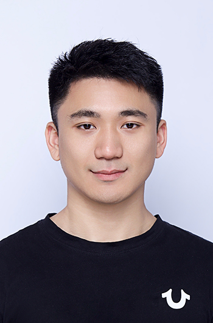

Harbin Institute of Technology (Shenzhen) and Great Bay University
Email:aopolin.ii at gmail.com

About Me
Hi, my name is Qi Lv (吕奇). I am currently a first-year Ph.D student in Harbin Institute of Technology (Shenzhen) and Great Bay University, advised by Yu Wang, and Liqiang Nie, co-supervised by Xiang Deng. Before, I received M.S and B.E from Soochow University, supervised by Ziqiang Cao and Guohong Fu.
I am now interested in Multimodal Large Language Models (MLLMs) and robotic learning. Specifically, I am investigating how to leverage MLLMs to empower embodied agents which are involved in high-level task planning and low-level motion control. Previously, I devoted to exploring natural language understanding during the master period.
Publications
RoboMP2: A Robotic Multimodal Perception-Planning Framework with Multimodal Large Language Models
Qi Lv, Hao Li, Xiang Deng, Rui Shao, Michael Yu Wang, Liqiang Nie
2023.09 - now, Computer Science, Harbin Institute of Technology (Shenzhen) & Great Bay University
2020.09 - 2023.06, Computer Science, Soochow University
2014.09 - 2018.06, Software Engineering, Soochow University
Awards
2022.8. Google AI4Code - Understand Code in Python Notebooks, held by Google and X (Kaggle). Bronze Medal [Website]
2022.8. Feedback Prize - Predicting Effective Arguments, held by Georgia State University (Kaggle). Sliver Medal [Website]
2022.6. The Entity Identification for E-Commodity Titles, held by National Association for Artificial Intelligence and JD Inc. The 3rd prize [Website]
2021.12. The Chinese Textual Error Correction Competition in Official Document Writing of Jiangsu University, held by Jiangsu Artificial Intelligence Association and Sugon Inc. The 1st prize